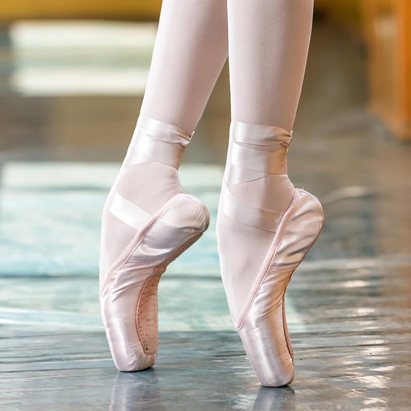

Ballet is a dance form with an emphasis on grace, control and precision. Some things worked on in ballet are
This type of Journey to being en pointe applies to students who start ballet at a young age. Everyone has different journies and reaches pointe at their own pace, which is okay.
| Age Range | What you are focusing on | How close you are to pointe |
|---|---|---|
| 6-8 | You are a young kid, and you are still focusing on learning the basic positions of ballet and coordination. Pointe is a long way to go for you, as you have to develop some muscle memory and motor skills in dance first. | Not very close-You still have to build a good foundation |
| 9-11 | You have built a foundation and coordination from when you were younger. Now, you are beginning to focus on strengthening your foot, training it, and stretching it for the next period of time. This will start to get your muscles used to a good arch in your feet, which you will need when you start pointe years later. Throughout the next two years, with consistency, you will see your foot become more flexible and strong, and you will be ready to learn even harder combinations with your feet. | Getting there-Keep staying consistent in stretching and strengthening your feet |
| 11-12 | You are a pre teen with a lot of foundational and somewhat intermediate technique. You have reached the stage where you need to be more consistent in training your foot. You have a high possibility of taking your pointe exam soon, which needs strong preparation, as this is a careful assessment so you don't get injuries in your feet. Also, your feet bones are reaching the point where they are harder, which makes it safer to go en pointe. | Almost there! Keep working on your feet and preparing them for a pre pointe exam! |
| 13-15 | You have just started pointe, and you are going to begin it with a lot of foot articulation at the barre. You need to get your feet trained to be comfortable on the tips of their toes. Throughout the next two years, you will start to do pointe across the floor, starting at simpler combinations, but then start to get harder. | Getting comfortable and more advanced en pointe |
| 16-18 | You are comfortable en pointe, and you can do turns, leaps and variations en pointe. You are learning more advanced ballet variations and performing more complicated dance roles in the nutcracker. Standing on the tips of your toes is easy for you now, and you are attending Joffery Ballet workshops and performing at YAGP. These next few years are building on more advanced moves en pointe, which is the step to becoming a professional in ballet, if it is somethingyou want to do in college or for a career. | Extremely advanced pointe dancer-Taking the steps to become a professional |

